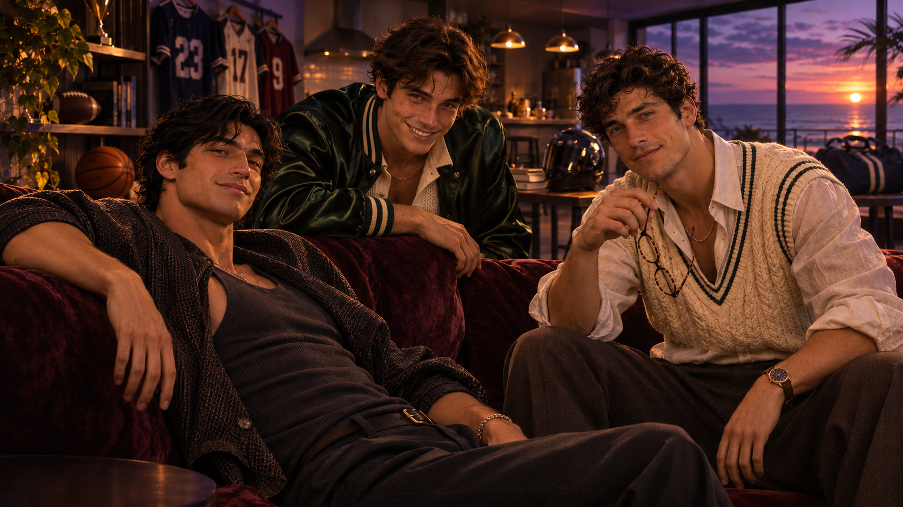
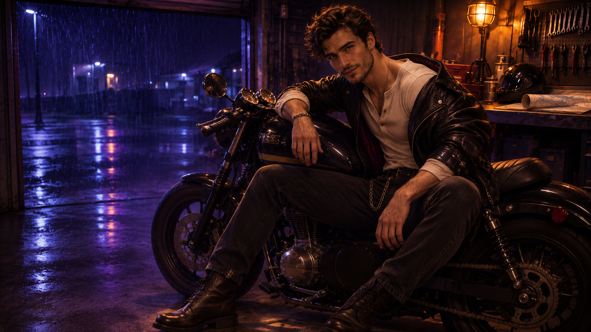
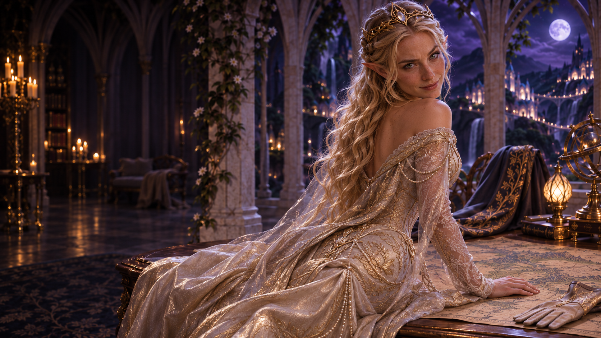

01
开场 · 门缝与开门

r2 分镜
scenes/01-opening/
BEHIND THE CURTAIN / WORK IN PROGRESS
六个世界的人物静态图已全部按新参考重做：服装、姿态、构图与光线统一为更有张力的电影摄影方向。14 张 r2 分镜、6 张最新图与 6 张旧版风格图，按场景分别归档。
六幕新图均为静态风格提案，官网预览保留滚动、撕裂与环境光影。相邻转场分镜仍保留旧版参考，人物视频尚未重新生成。
r2 分镜
scenes/01-opening/
本轮新样张 · 造型与构图重做
scenes/02-private-club/
本轮新样张 · 造型与构图重做
scenes/03-vampire-castle/

本轮新样张 · 造型与构图重做
scenes/04-athlete-house/

本轮新样张 · 造型与构图重做
scenes/05-midnight-garage/

本轮新样张 · 造型与构图重做
scenes/06-elven-court/
本轮新样张 · 造型与构图重做
scenes/07-roommates/